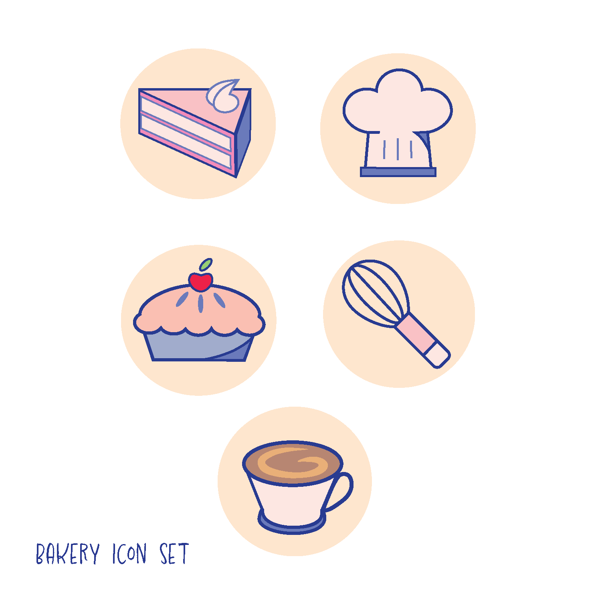
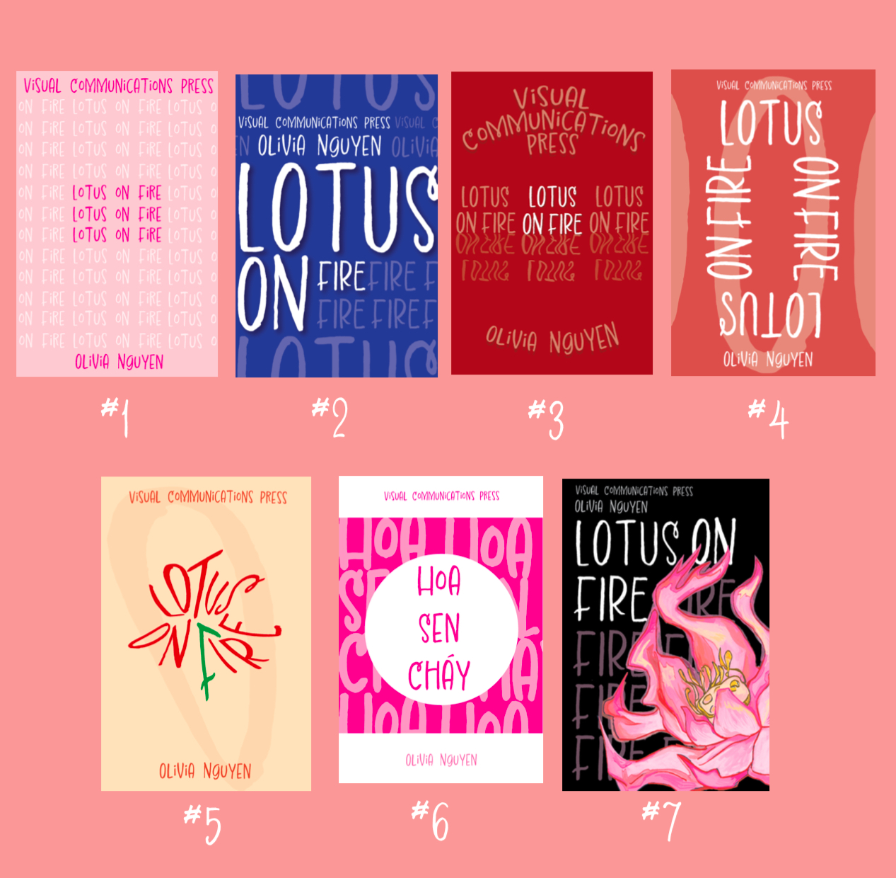
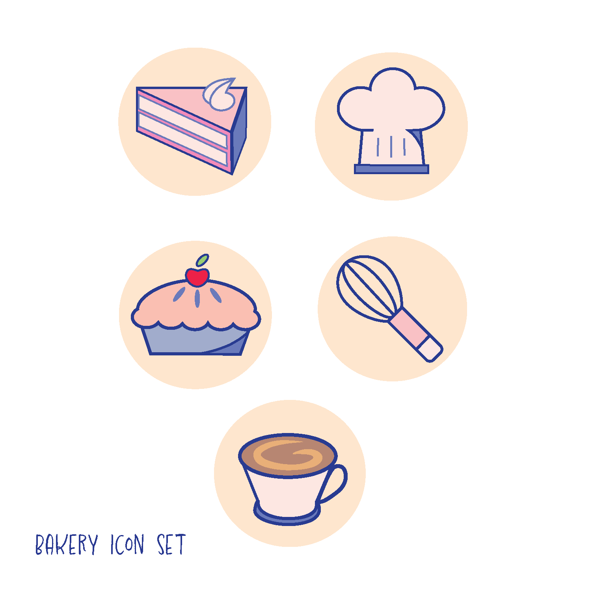
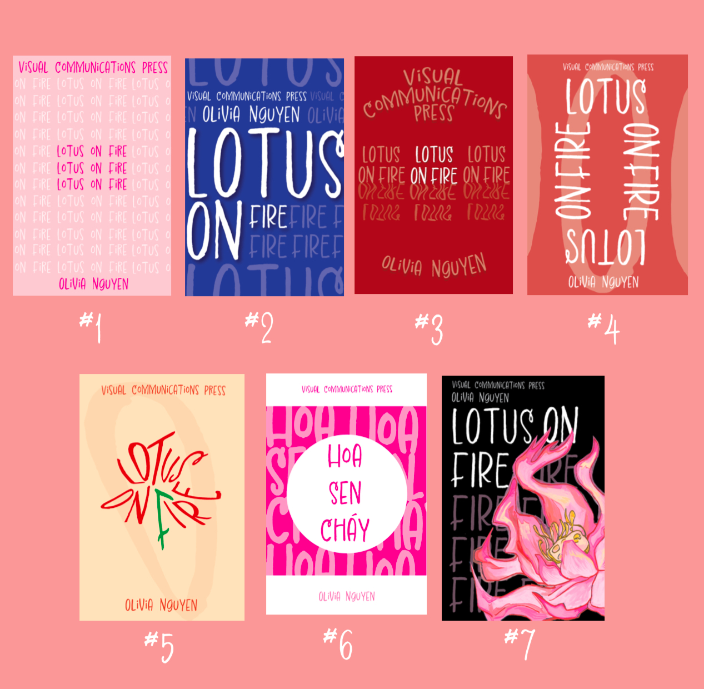
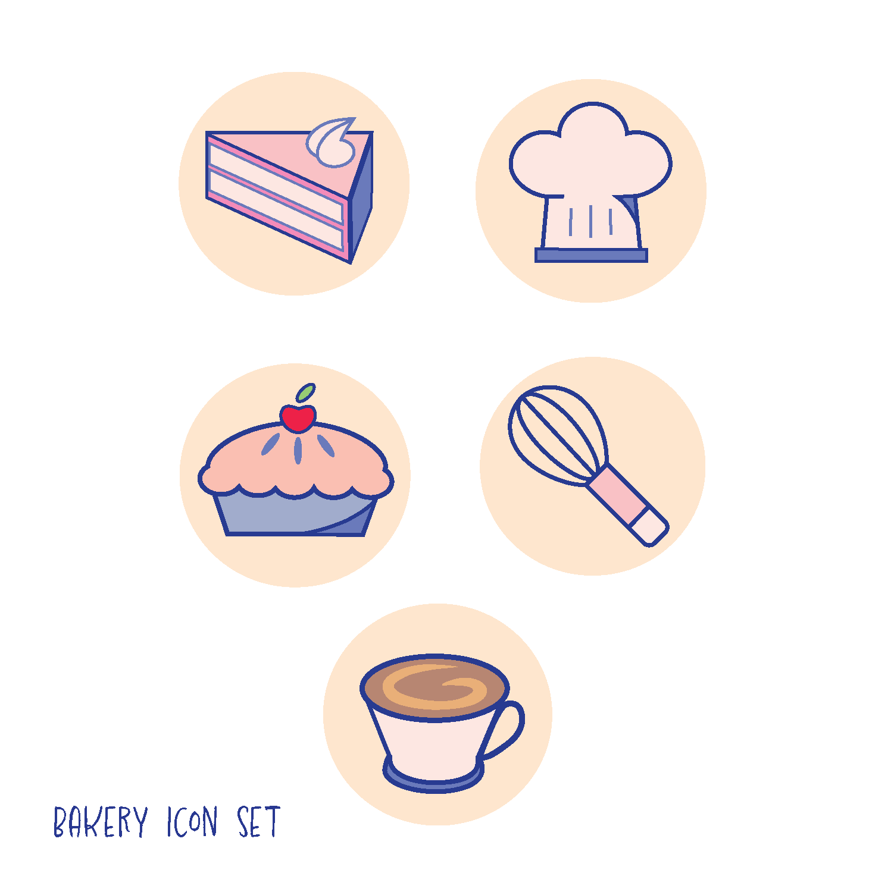
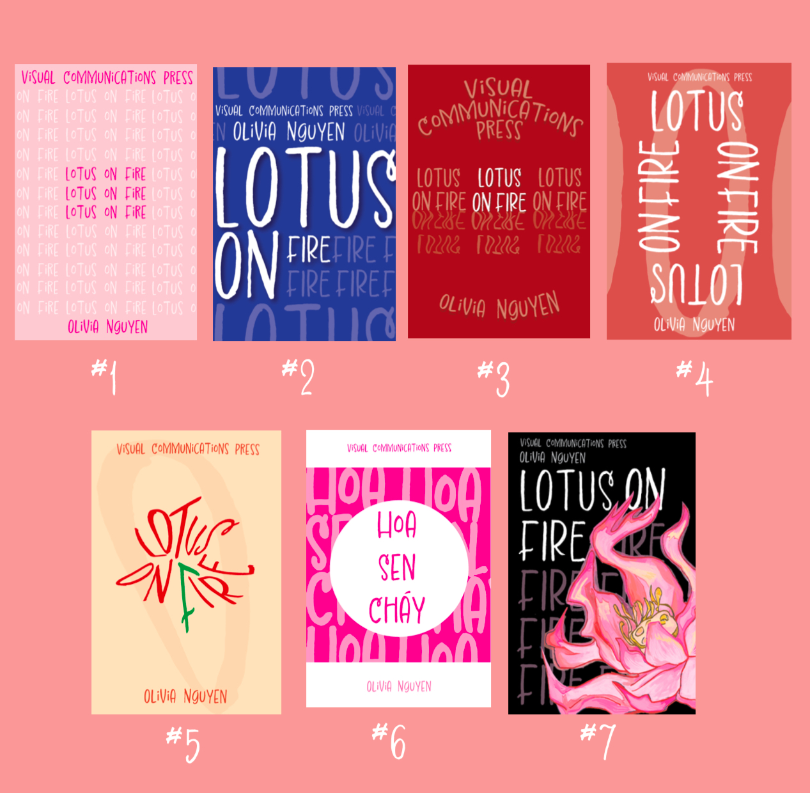

Here you'll find relevant images and explanations of my design/artwork.


For this design piece I was tasked with creating a poster for either a bus stop or billboard for a current, existing brand. I had to follow the brand guidelines in order to create a poster that the brand would "actually" use. I chose Duolingo because it's an app I use and I love the fun illustrations and mascot.
I created a typeface for a professor at Syracuse University, Anthony Adornato. Inspired by his TV reporting background and NBC experience, I made a bold, confident, quirky typeface with "star quality."
Mockup icons for a bakery menu that aid navigation and visually highlight sections. Each icon represents different menu items or categories, such as the chef’s hat for specials and cake for signature desserts.


I created 7 covers for a personal memoir. Each had constraints—like the first allowing only one variable to be changed (color), pushing boundaries while keeping other elements uniform.
Creative educational design using ramen packaging steps incorporated into the steam of the ramen illustration—fun and eye-catching, enhancing learning through visual storytelling.